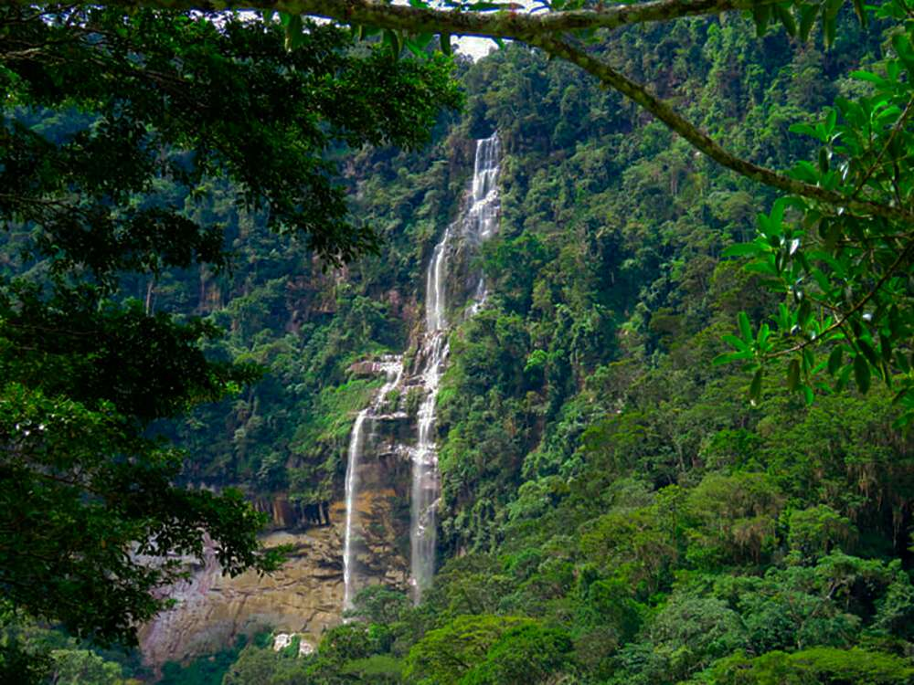
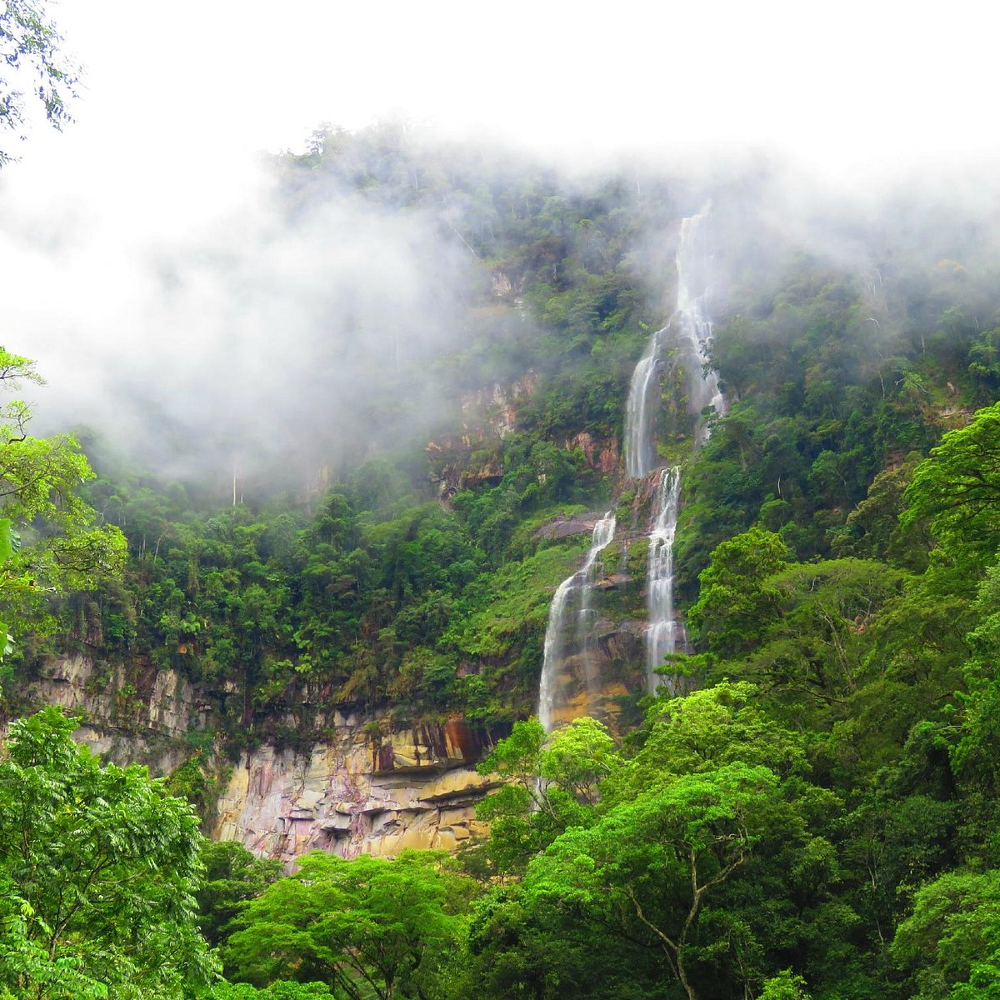
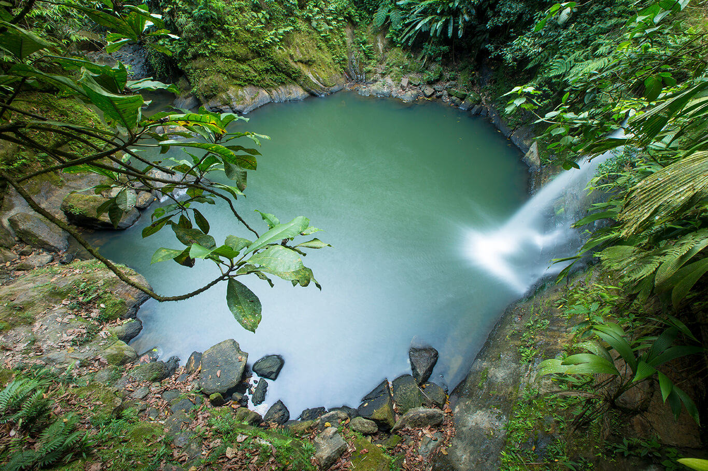

Catarata de Ahuashiyacu: Un tesoro natural en la selva peruana
Ubicada en la región de San Martín, la Catarata de Ahuashiyacu es una de las más impresionantes de la Amazonía peruana. Con una caída de agua de aproximadamente 40 metros, ofrece un entorno ideal para el ecoturismo y el contacto con la naturaleza.
Historia
Su nombre en quechua significa "agua que ríe", reflejando el sonido relajante que produce la cascada al caer sobre las rocas. Ha sido un lugar sagrado para las comunidades indígenas y hoy en día es un importante destino turístico en Tarapoto.



Horarios y Ubicación
- Ubicación: Tarapoto, región de San Martín, Perú.
- Horario de visita: De 8:00 a.m. a 5:00 p.m.
- Costo de entrada: Tarifa accesible para visitantes nacionales y extranjeros.
Consejos para Visitantes
- Usa calzado adecuado: El acceso a la catarata incluye un sendero natural con algunas pendientes resbaladizas.
- Lleva repelente de insectos: La zona es hogar de una gran diversidad de insectos, por lo que es recomendable protegerse.
- Respeta el entorno: No dejes basura y evita alterar el ecosistema local.
- Disfruta de un baño refrescante: La poza natural al pie de la catarata es perfecta para nadar y relajarse.
- Consulta el clima: Las lluvias pueden afectar la accesibilidad del sendero, por lo que es recomendable verificar las condiciones antes de la visita.